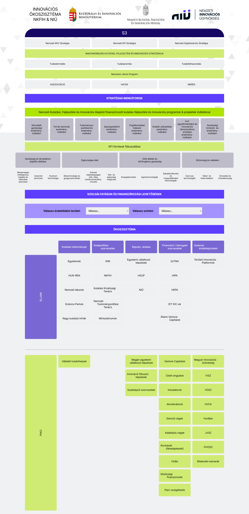
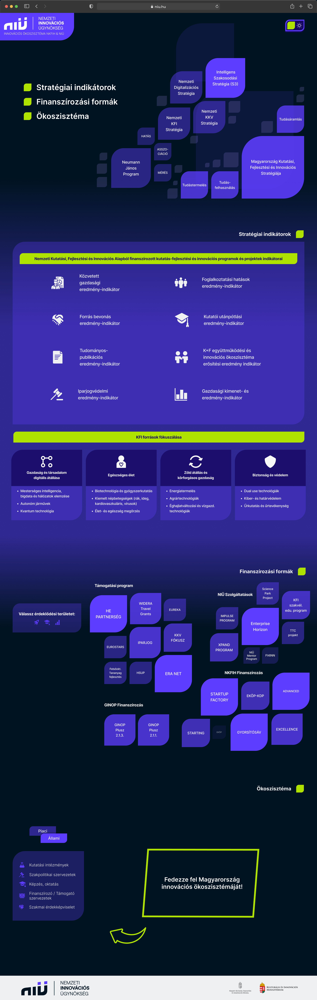

Design process
Our work process can be divided into four main steps, with all of us actively involved in each one, ensuring an equal contribution from everyone.
Understanding the client's needs and expectations
- Reviewing the brief.
- Reviewing the brand guidelines.
- Reviewing competitor solutions
Understanding the hierarchy of information
- Defining groups of information.
- Defining functions.
Ideate on structures and interactions
- Rapid paper wireframing.
- Brainstorming and brainstorming and even more brainstorming.
- Quick and dirty prototyping to try out ideas.
- Listing possible new features.
Implementation
- Prototyping in Figma.
- Ensuring alignment with the brand guidelines.
- Considering accessibility factors.
- User testing.
As mentioned earlier, the Hungarian Innovation Ecosystem Map already existed, so our task was to redesign it. To clearly highlight our work and the changes, I’ve placed the old and new versions side by side.
Changes in the UI
Here are some of the initial changes we did on the UI of the map.


Final Deliverables
To showcase the interactions, we created a short presentation video that walks through the entire redesigned ecosystem map. If you’re unable to play the video here, you can watch it on YouTube using the following link: Watch here!